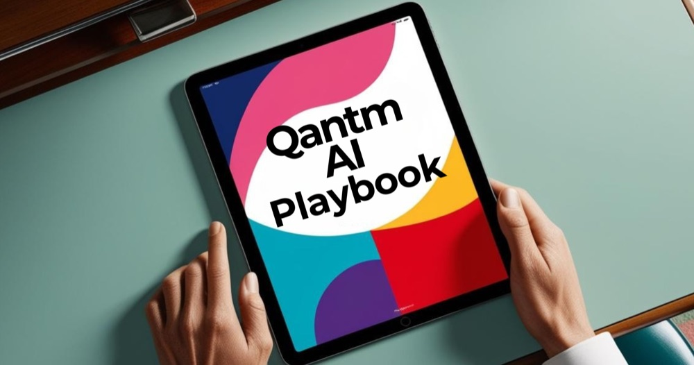
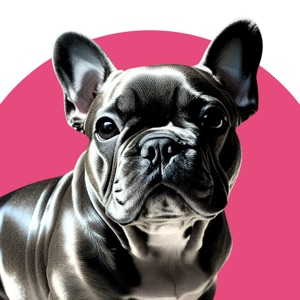

Leading the AI Revolution in Business
We're a team of AI experts and business strategists helping organizations navigate the future of technology.

Our Mission
At Qantm AI, we believe in democratizing artificial intelligence for businesses of all sizes. Our mission is to bridge the gap between cutting-edge AI technology and practical business applications, ensuring our clients stay ahead in an increasingly digital world.
Our Values
Innovation
Constantly pushing boundaries and exploring new possibilities in AI.
Excellence
Delivering high-quality solutions that drive real business value.
Partnership
Building long-term relationships based on trust and mutual success.
Responsibility
Ensuring ethical AI development and sustainable practices.
Our Team
Dr. Seth Dobrin
CEO & AI Strategist
Formerly IBM's first-ever Global Chief AI Officer — 15+ years transforming business through AI.
Tabitha Rudd
COO
Business operations, marketing, sales operations & partnership relations.

Gigi Frenchie
CSO
Cookie breach & toy phishing expert, specializing in robust package delivery safety protocols & team crisis management.
Dot LeBot
MDL
Development, implementation, and management helper.